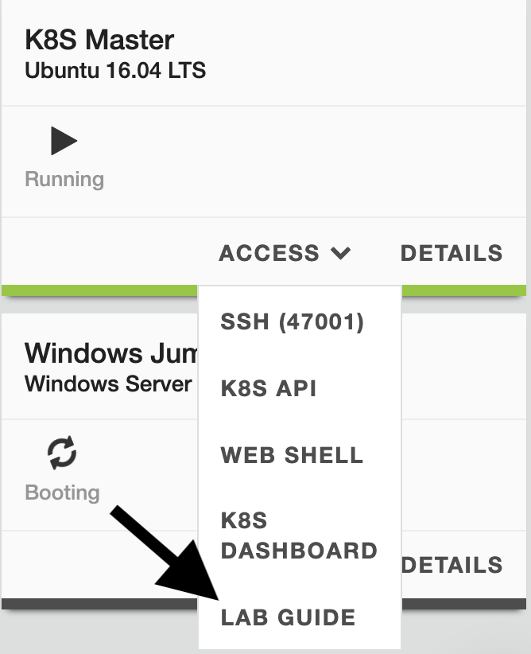

NGINX Ingress Controller Walkthrough - Index¶
Welcome¶
The goal of this lab is to introduce you to NGINX+ as a Kubernetes Ingress Controller and F5 Container Ingress Services. The BIG-IP can act as the “front door” to the Kubernetes cluster and bring services to NGINX+ that is running inside the cluster.
During the lab you will:
- Deploy a simple Kubernetes application
- Deploy an NGINX+ Ingress Controller
- Deploy an F5 BIG-IP Controller for Kubernetes
Together NGINX+ and BIG-IP will secure traffic to the Kubernetes application.

The UDF Blueprint called NGINX Ingress Controller Walkthrough will give you access to the following infrastructure:
| System | Hostame | Description |
|---|---|---|
| BIG-IP1 | ip-10-1-1-4 | F5 BIG-IP |
| K8S Master | ip-10-1-1-5 | Kubernetes Master node (where lab files are) |
| K8S Node1 | ip-10-1-1-6 | Kubernetes Master node (where lab files are) |
| K8S Node2 | ip-10-1-1-7 | Kubernetes Master node (where lab files are) |
| Windows RDP | ip-10-1-1-8 | Windows JumpHost |
Note
The entire lab can be performed from the Windows Jumphost (if you’ve not set up SSH keys for UDF).
The Lab Guide is available from UDF or on the Windows Jumphost.
{kind=link}